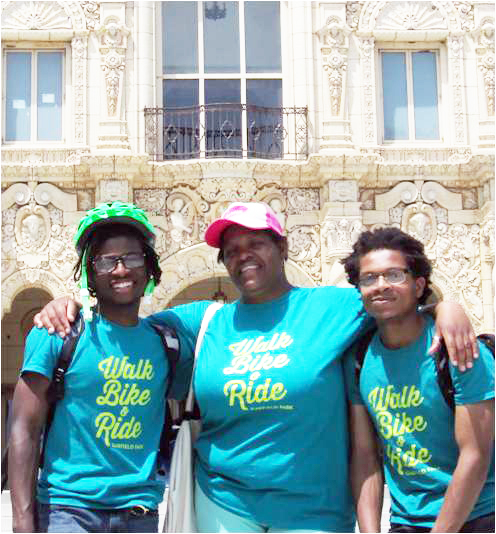

Tools Used
- Building Motivation Over Time
- Norm Appeals
- Obtaining a Commitment
- Neighbourhood Coaches and Block Leaders
- Word of mouth
Initiated By
City of Chicago Department of Transportation
Partners
- Local community organizations
- Alta Planning + Design
- Active Transportation Alliance
Results
- Two thirds (65%) of program respondents reported walking, bicycling, or taking transit more often because of the program.
- The program successfully engaged racially-diverse, traditionally marginalized communities.
Resources
Go Garfield Park Video (note that if you are looking for the the five-minute Tools of Change video, its link is just above this paragraph)
The City of Chicago Complete Streets website includes links to customized neighborhood transportation maps, infographics with evaluation results, and social media links for each Go Program.
Landmark Case Study
Chicago’s Go Program
Chicago’s Go Program is an Individualized Marketing program that helps residents walk, bike, ride transit, and use bike share more frequently, while driving alone less often. Compared with past Individualized Marketing efforts in other cities, the Go Programs have pushed the envelope of inclusive, accessible programming that serves a very broad range of Chicago neighborhoods - and the very high participation rates and positive post-program stakeholder input show that this effort paid off. Because of these successes, the Go Program can serve as a model for other communities looking to integrate equity and diversity in Transportation Demand Management programs. On average, 65% of post-program survey respondents report increased walking, biking, or transit usage because of the program. The program’s behavior-changing results led the City of Chicago to designate funding for additional neighborhoods in the future. Designated in 2017.
Background
Note: To minimize site maintenance costs, all case studies on this site are written in the past tense, even if they are ongoing as is the case with this particular program.
The Go Program was developed by the City of Chicago’s Department of Transportation (CDOT) in collaboration with Alta Planning + Design, the Active Transportation Alliance, and local community organizations.
Five neighborhoods that span a diverse cross-section of Chicago’s population benefitted from the program over a four-year time frame. Participating neighborhoods included: Bronzeville, Pilsen, Edgewater, Albany Park, and Garfield Park.
Chicago, Illinois, USA
Setting Objectives
Program goals were developed for the program as a whole. Major goals included:
- Reduce vehicle miles traveled (VMT) by area residents.
- Increase awareness and raise acceptability of modes of travel besides driving alone.
- Provide a community-based Transportation Demand Management (TDM) template for other communities
- Strengthen community cohesion
- Foster community engagement
Although goals were established at the outset of the program, they evolved according to community input. Goals related to community cohesion and social trust were especially important objectives for community leaders.
Getting Informed
Neighborhoods were selected based on information about available transportation options, active community organizations, racial and ethnic diversity, median income level, community marginalization, and other metrics.
Each neighborhood campaign began with extensive interviews and in-person meetings with local community organizations, transportation advocacy groups, elected officials, and more. Although there is no “ideal” number of community organizations to interview, on average the program spoke with over 25 groups per neighborhood. Interviews collected insights about the communities including barriers that kept residents from walking, bicycling, and using transit and bike share. This level of stakeholder engagement allowed for a high degree of customization for each neighborhood in terms of messaging, branding, and events.
The key motivators (“reasons for participating”) varied by community. Overall, the top three were: to explore the neighborhood, to obtain more transportation information, and to gain personal health benefits. Other motivators included meeting neighbors and reducing pollution.
Prioritizing Audiences
CDOT specifically focused on audiences within each community that had been historically underserved.
Delivering the Program
Each four-month campaign engaged a particular neighborhood with one-on-one conversations, free events, and print resources intended to support people in trying new modes of transportation. Participants had access to free personal support, group activities, and personalized Go Kits (full of walking, biking, transit, and bike share information), all designed to establish new community norms and stimulate habit formation. (Building Motivation, Engagement and Habits Over Time)
An inclusive, accessible program with an equity focus on both race and income
Creating an inclusive, accessible program for those most in need was a core value of CDOT’s approach to this program, which Alta Planning + Design and Active Transportation Alliance strongly supported through program development and delivery. While individualized marketing program target areas are often chosen due to infrastructure, land use, and other indicators of success, CDOT specifically chose target areas that had been historically underserved, while also aiming to have geographic diversity across the city with participating neighborhoods from the south, west, and north sides.
A key to the success of the Go Campaign was hiring local Ambassadors from within each community. Stakeholders respected these individuals and were enthusiastic about learning from them through participating in the program. The Ambassadors came to the job with existing, authentic community relationships that helped build trust between the program and residents.
Additionally, the Ambassadors understood how to motivate and inspire their fellow community members, more so than any outside individual or organization not deeply connected to the community. (Neighborhood Coaches)
Tailored to Each Community
Insights from community stakeholders and the Ambassadors helped tailor each program to the neighborhood’s interests and needs.
- Go Bronzeville - Bronzeville, a predominately African-American neighborhood, is the epicenter of Chicago-style jazz and blues music as a result of the Great Migration. The program’s messaging and branding highlighted and celebrated this history through events such as the Bronzeville Legends Bike Tour and the Historic Church Walk. Promoting health and wellness was another important message that resonated with the Bronzeville community. Events were organized with this in mind, and the GirlTrek Women’s Wellness Walk was one of the program’s most popular, well-attended events.
Finally, giving the community ownership and decision-making power over the design of the program and events was very important to create a sense of trust that helped news of the program spread by word-of-mouth. (Word of Mouth) - Go Pilsen - Pilsen is a community characterized by its strong connections to residents’ Mexican-American heritage. This culture was celebrated through branding the program with bright colors chosen by residents and meaningfully incorporating important cultural symbols such as the Aztec sun and the eagle and serpent from the Mexican flag on program materials. Materials were translated into Spanish and the program hired bilingual Ambassadors who had a deep understanding of the local culture. The program tapped into the importance of culture, art, and creativity. Organized events included the Mariachi in Millennium Park Bike and Transit Ride, The National Museum of Mexican Art Community Fiesta and Mural Walking Tour, and the Lotería (Mexican Bingo) Community Walk. Facebook was heavily utilized as an important communication channel for announcing events and spreading the word about the program, because it was already a well-used method of communication for community residents.
- Go Albany Park - Albany Park is known for its diverse population. Area residents or their families moved to Chicago from countries around the globe. This diversity was celebrated throughout the program. Bilingual Ambassadors were hired and select program resources were made available in seven languages: English, Spanish, Arabic, Korean, Serbo-Croatian, Tagalog, and Vietnamese. The t-shirt for the program was designed to include phrases from each of these languages. Popular events organized to celebrate Albany Park’s multi-ethnic heritage included the Paleta Paseo, the World Fest Architecture Walk, and the International Flag Party & Bike Ride.
- Go Edgewater - Edgewater is a family-oriented community with a strong interest in strengthening and promoting local business, sustainable lifestyles, neighborhood history, and a sense of community. Events were organized with community partners and businesses to promote these ideals including multiple Edgewater + Andersonville Kidical Mass family bike rides, the Family Bike Ride to EdgeFest, the Edgewater Historic District Walk, and the Green and Blue Sustainability Edge Walk. Email was found to be the most effective way to spread the word about events and the program.
- Go Garfield Park - This program took place in the traditionally underserved and predominately African-American communities of East and West Garfield Park. Promoting better health and a sense of community were important messages that helped the program connect with residents. Ambassadors attended and tabled at church dinners, food pantries, neighborhood markets, homeless shelters, and PlayStreets block parties to reach residents at established community events. Go Garfield Park began several bike rides and walks at these events. This helped increase participation and establish trust between the community and program. The community’s Golden Dome fieldhouse, an important community hub between East and West Garfield Park, was showcased on program materials to brand the program specifically for the community.

Tabling at a Garfield Park Event
Four Primary Strategies
The Go Program used four primary strategies to change travel behavior: (1) the hiring of local outreach staff to act as role models (Ambassadors), (2) the distribution of transportation resource kits, (3) one-on-one outreach at community events, and (4) the development of fun, engaging group walking, bicycling, bike share, and transit experiences for residents.
1. Ambassadors: The program could not have succeeded without passionate local outreach ambassadors who became trusted community role models. Because they were hired from the communities, the people they spoke with at events and other venues were their peers. According to Go Bronzeville Ambassador LaKeisha, “We made biking real and tangible to residents. When it comes to walking and biking, a lot of people need to be pushed, because sometimes they’ll say, ‘Oh I can’t do it.’ So we became coaches and mentors, saying, ‘Yes you can, let’s try this out.’” Program ambassadors used their own life experiences and knowledge of their community to customize program messaging and event ideas. (Neighbourhood Coaches; Norm Appeals; Vivid, Personalized, Credible, Empowering Communication)
The local outreach Ambassadors helped people explore their travel options by engaging residents in dialogue and fostering community partnerships. The program also organized and led group events where staff and Ambassadors answered questions and provided personal support to help reduce barriers to accessing transportation options. (Word of Mouth)
The outreach Ambassadors became well known in their neighborhoods as resources for transportation solutions; community organizations started inviting them to existing events and meetings as the campaign progressed.

Go Garfield Park Ambassadors in front of the Garfield Park Fieldhouse
2. Transportation Resource Kits: The program invited more than 40,000 households to order free Go Kits with customized travel information (including bike maps, transit maps, bike share passes, walking guides) incentives, and a pledge card. Almost 4,900 kits were delivered, all by bike and by foot. These kits helped residents become more familiar with local transportation options and become better educated about the benefits of using alternative forms of transportation. Their purpose was to bridge the information gap between driving (with which most people were very familiar) and other modes (which were often unfamiliar to residents). (Incentives; Obtaining a Commitment; Vivid, Personalized, Credible, Empowering Communication)
The project team (City, consultants, and locally hired Ambassadors) worked closely with interested community partners in each neighborhood to highlight neighborhood assets, including transportation features such as train/bus access and comfortable bike lanes and routes, as well as the cultural treasures such as community gardens, museums, and local community events. Resources available in the Go Kits included a customized neighborhood map with neighborhood-specific information about local bike shops and supportive businesses and other community assets.
Each kit included customized incentives, such as t-shirts, aluminum water bottles, and bike bells. Residents also had the option of receiving a free 24-hour bike share pass and an informational brochure with details about the $5 bike share annual membership for low income residents.

The Go Kits included customized information and incentives.
3. One-on-One Outreach at Community Events: In addition to attending existing community events, the project team collaborated with partners to host Ambassador and program staff-led events. Collaboration with community groups was important to ensure a wider audience reach and gain community credibility. Event partners included arts groups, senior and affordable housing providers, churches, and others. Events included electric bike trials for seniors, bike-to-work week events, pop-up bike repair shops, an African-American women’s health walk, crafting sessions on public transit (the “Loop and Purl”), a glow-in-the-dark guided bike ride to a stargazing event with a local astronomer, and a family picnic walk—just to name a few. (Norm Appeals; Overcoming Specific Barriers; Vivid, Personalized, Credible, Empowering Communication)
The project teams worked closely with community partners to co-host events that were locally appropriate and that highlighted neighborhood assets and initiatives. As one example, Go Garfield Park events focused on connecting low-income residents with essential services and amenities within the neighborhood. For instance, the Ambassadors partnered with a local social service organization to bring 20 homeless men on a bike ride to an urban farm where they learned about healthy, local food options. Divvy, Chicago’s bike share system, provided free bikes and an introduction to its $5 bike annual membership for low income residents. (Overcoming Specific Barriers)
Throughout the four-year program, Divvy bikes were also brought to community events such as farmers markets and block club parties. Residents were encouraged to go on test rides and were provided with relevant resources, including a free 24-hour bike share pass and an informational brochure with details about the $5 bike share annual membership for low income residents. CDOT specifically chose target areas that had been historically underserved but that had recently been added to the Divvy network service area. (Vivid, Personalized, Credible, Empowering Communication)
Community partners, Ambassadors and other staff directly engaged with over 7,000 people at over 200 community events (109 group walks and bike rides, and another 109 outreach events such as farmers markets and health fairs). Through one-on-one discussions, Ambassadors pinpointed exactly what information and resources each resident needed to overcome existing transportation barriers. They were trained to become coaches and problem-solvers no matter who engaged them in conversation. (Overcoming Specific Barriers; Vivid, Personalized, Credible, Empowering Communication)
4. Group Experience of Alternative Options: Program staff organized 109 free events in conjunction with community partners. Over 2,000 residents attended these events. Neighborhood-specific group walks, bike rides, and transit events gave individuals a chance to learn new, comfortable routes and try forms of transportation they might not otherwise use. They helped neighbors meet and create a sense of social norms around using travel options besides driving alone. (Norm Appeals; Vivid, Personalized, Credible, Empowering Communication)


In addition, the program sent monthly newsletters to participants while the program was running in their communities. Each community program had a four-month span, during which they received funding and staffing support from the City and consultant team. However, outreach Ambassadors and residents continued each program after their respective end dates. These individuals continued their work on a volunteer basis through a variety of methods including organizing biking and walking events, encouraging bike share, and sharing transportation news and resources to pave the way for long-term benefits. CDOT welcomed this and turned program assets and resources over to the volunteers with a simple Memorandum of Understanding.
Financing the Program
Each community program cost approximately $US 250,000 and reached 7,500-10,000 households. This cost included program planning and development, implementation, evaluation, outreach staff time, materials printing and postage, incentives, and translation.
While this was an appropriate budget for the full-service campaigns, the project team also developed a DIY guide to allow communities to implement their own (less resource intensive) versions of the program. Further, some elements of the campaigns were continued on a volunteer basis by the Ambassadors and/or community partners, such as event hosting and social media engagement.
Measuring Achievements
Because of the focus on under-served residents, the program goals evolved away from focusing solely on mode shift and VMT reduction to include additional, more nuanced metrics of enhanced community engagement and behavior change outcomes (such as trying new modes and using transportation options more often).
In each community, residents who ordered a free Go Kit were required to complete a short survey about their travel behavior. At the end of each program, participants were asked to fill out a post-program survey with the same travel behavior questions, as well as additional questions about program impact. These pre- and post- program survey results were then compared to determine the effects of the program on participants’ travel choices. 1,516 participants completed the pre- and post- program surveys, a 36% response rate.
To distinguish between impacts caused by the program versus other factors, several post-program survey questions specifically asked residents how their sense of community and their walking, biking, and transit behaviors changed as a result of the program.
The program also tracked Go Kit sign-ups and event participation rates, social media interactions, qualitative feedback received throughout the program, and comments from in-person focus groups with community leaders upon the program’s conclusion.
Feedback
At the close of each neighborhood program, the project team followed up with resident participants via email to share program impacts and results. This was done by sharing the summary infographic and communicating key metrics, such as how many neighbors participated in the program.
Results
Impacts – Individual participants
Two thirds (65%) of program respondents reported walking, bicycling, or taking transit more often because of the program. (81% of Go Pilsen participants, 64% of Go Garfield Park participants, 61% of Go Albany participants, and 54% of Go Edgewater participants; note that this question was not asked of Go Bronzeville participants).
Half (52%) of Pilsen respondents reported replacing at least one car trip with another form of transportation at least once per week as a result of the program. Unfortunately, that was the only community where that question was asked.
Overall, the program demonstrated an ability to create cultural shifts and help residents alter their daily trip habits. The following quotes from participants illustrate these sentiments:
- “I had really never ridden a bike in Chicago. I participated in Go Albany Park last summer and as a result, this summer I ride my bike every single day. I totally credit Go Albany Park with teaching me how to ride a bike!” (Go Albany Park)
- “My family became more conscious about healthy habits and began taking walks after dinner.” (Go Pilsen)
- “Love the bike rides. Plan to start riding my bike to the store.” (Go Bronzeville)
- “I used to drive to the Edgewater Farmers Market, but because of your encouragement, I now walk to the farmers market with my cart instead.” (Go Edgewater)
- “The program helped me get a senior card to ride [public] transportation.” (Go Garfield Park)
- “I bought a bike because of your initiative and intend in every way to use it more. Your resources for biking were truly helpful.” (Go Pilsen)
The program also helped participants feel more informed about local transportation resources. Ninety percent of Albany Park and Edgewater respondents reported feeling more informed. The same goes for 80% of Garfield Park respondents. This question was not asked in Pilsen or Bronzeville.
Impacts – Overall
- Population size of the program’s audience: About 40,000 City of Chicago households in five neighborhoods
- Program registrants: 4,878
- Percentage of survey participants who reported walking, biking, or taking transit more (not including Go Bronzeville): 64.7%
According to post-program survey results, Go Pilsen’s reduced 607.5 trips per week because of the program. This is equivalent to a reduction of 4,252 vehicle miles per week (a calculation based on 2009 data from the National Household Travel Survey (NHTS) assuming that on average people travel 7 vehicle miles per trip on a daily basis).
In addition, the Go Program produced positive changes related to community cohesion and community perception. Due to the community area’s crime rates and community perceptions, the Go Garfield Park program Ambassadors and staff were challenged to develop an engaging program that could encourage participation and offer safe and comfortable group outings. The team worked closely with community stakeholders to confront these challenges.
Overall, 62% of Go Garfield Park participants reported feeling more connected to their community because of the program. One Go Albany Park participant noted on the post-evaluation that the program had “done so much for our neighborhood, making it a better, more connected, place to live.” Similarly, a Go Pilsen program participant commented, “I enjoyed seeing our community coming together as one and learning from one another. I've never seen and learning from one another. I've never seen the community so engaged.”
Cost-Effectiveness
Each program continued on afterwards as a community-based initiative, independent of the original grant funding. This extension past the original grant timeline indicates great cost-effectiveness, since the programs continued on without the original funding source.
Contacts
Sean S. Wiedel, AICP
Chicago Department of Transportation
30 N. LaSalle Street, 5th Floor
Chicago, IL 60602-3339
312-744-8182 (P)
sean.wiedel@cityofchicago.org
Notes
Lessons Learned
- During Go Bronzeville, the first neighborhood program, the team immediately learned the value of hiring local role-models. Ambassador LaKeisha Hamilton put it best, “We both made biking real and tangible to residents. They would say ‘Wait a minute, she looks like me, and she looks cool riding her bike.”
- In some communities, tensions and in-fighting posed a problem between certain community groups. Program leaders were clear from the beginning that they intended to work with every community group who was interested in getting involved and promoting active transportation options. Program staff emphasized that they would not favor any particular group.
Ambassadors and the program team also realized the importance of speaking to residents of all ages including children and the elderly. By being inclusive to all community members and organizations, the programs were thought of as being made for and available to everyone, regardless of age or physical ability.
- Having quirky, unique, and fun events was key to getting residents out walking and biking. Residents often had competing priorities for their time; organizing unique programming helped capture residents’ attention and encourage them to try something new. Go Pilsen, for example, organized a Market to Garden Bike Ride which included delicious drinks made by a bike-powered smoothie machine.

Go Pilsen’s Star Party Bike Ride involved decorating bikes in glow-in-the-dark accessories and ending the ride with a telescope star-viewing party and lecture led by a local neighborhood astronomer.

The Bike Like a Viking Ride was a unique chance for residents to have fun, dress up, and bike to a community destination.
Collaborating with community partners was essential for developing community trust and spreading the word. Program staff began working with stakeholders at least four months prior to the beginning of each program. These leaders provided insights on how to reach residents through messaging and communications. They also became important event partners who helped us tailor events to community needs and interests and helped expose hundreds of residents to transportation resources and experiences in each neighborhood.
Other Notes
- Neighborhood Selection Criteria: Participating neighborhoods were selected due to a variety of factors. In addition to selecting neighborhoods that featured a variety of transportation options and active community organizations, the program sought to involve racially-diverse, traditionally marginalized communities. Ambassadors reflected this diversity, as they were hired from the communities in which they resided.
- Youth Empowerment: Although the program targeted individuals who were at least 16 years old, the age one could acquire a driver's license, the program built relationships with several other youth-centered initiatives. Go Pilsen, for instance, created a Junior Ambassador program. Fueled by a separate grant, one of the Go Pilsen Ambassadors trained and led youth in program outreach. The youth learned valuable skills and amplified the program’s outreach capacity.
- Program Continuation: The Go Program was so successful that in each neighborhood either the outreach Ambassadors or community leaders stepped forward to take ownership of the programs once the limited-term, four-month campaigns had closed. In this way, The City’s four-month grant funding for each project seeded future growth. Outreach Ambassadors and residents continued the initial campaign’s momentum on a volunteer basis. This is a testament to the program’s relevance and ability to build community buy-in.
Landmark Designation
The program described in this case study was designated in 2017.
Designation as a Landmark (best practice) case study through our peer selection process recognizes programs and social marketing approaches considered to be among the most successful in the world. They are nominated both by our peer-selection panels and by Tools of Change staff, and are then scored by the selection panels based on impact, innovation, replicability and adaptability. The panel that designated this program consisted of:
- Sunny Knott, King County
- Nathalie Lapointe, Federation of Canadian Municipalities
- JoAnn Woodhall, Translink
- David Levinger, Mobility Education Foundation
- Geoff Noxon, Noxon Associates
- Adam Popper, City of Toronto
- Phil Winters, CUTR and the University of South Florida